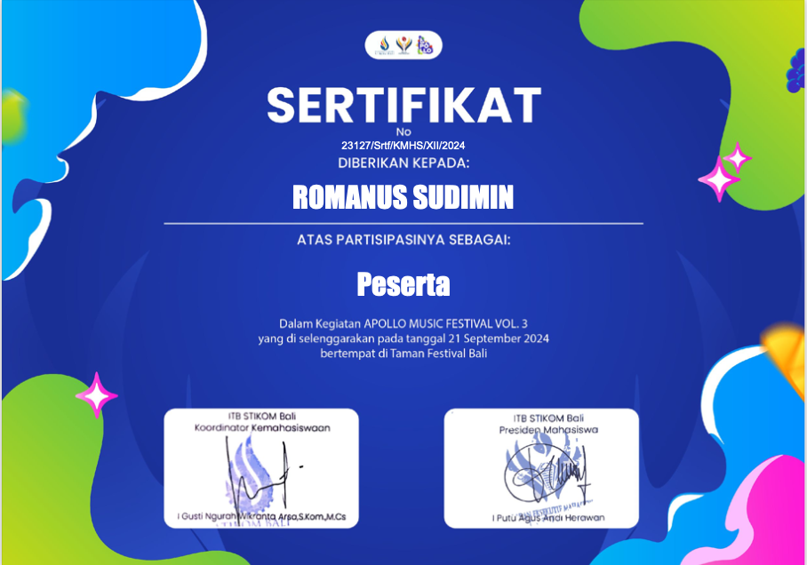
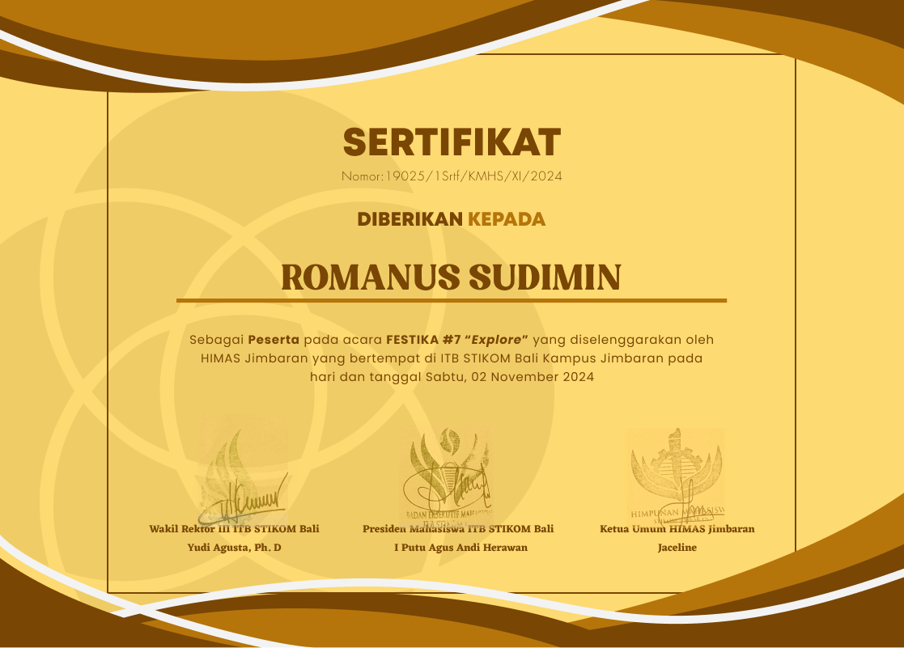
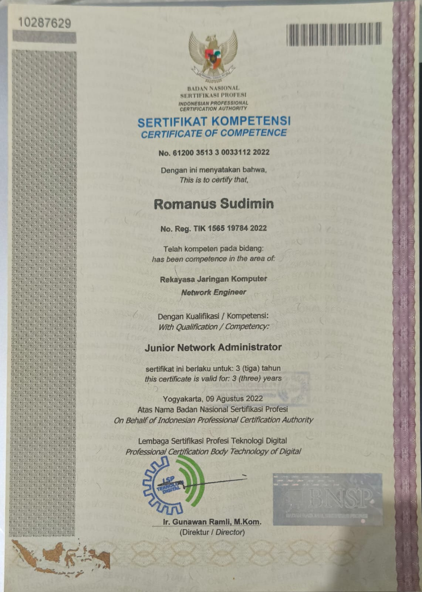
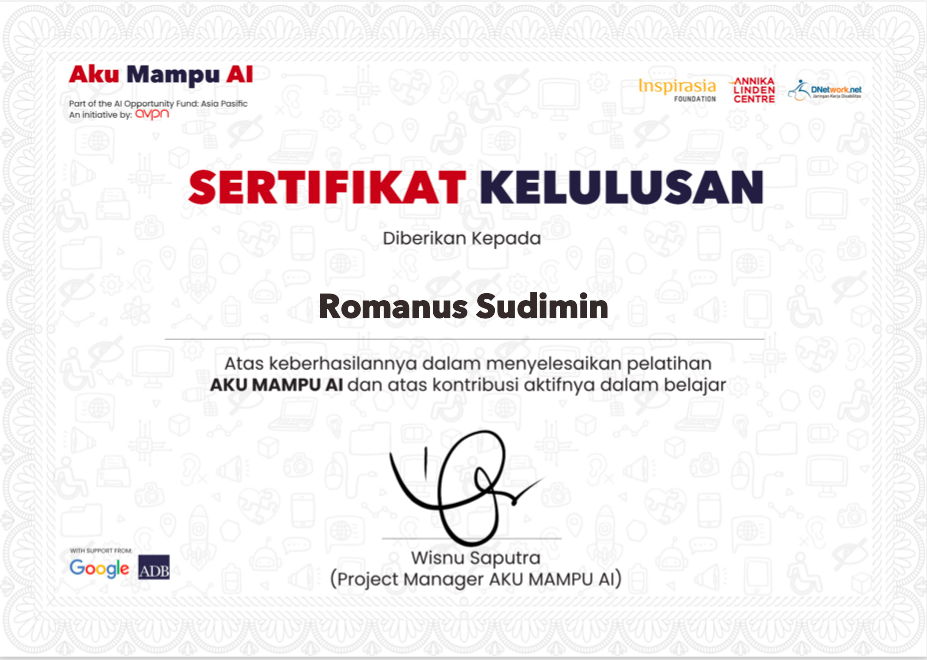
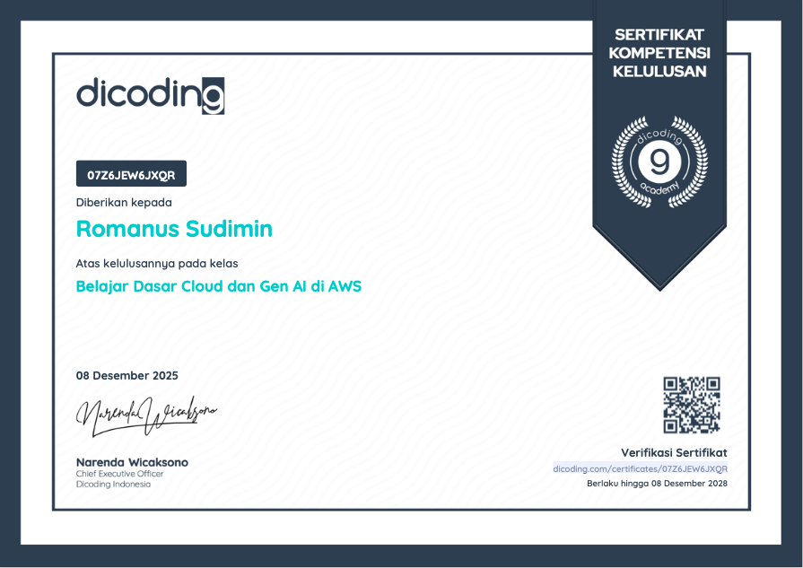
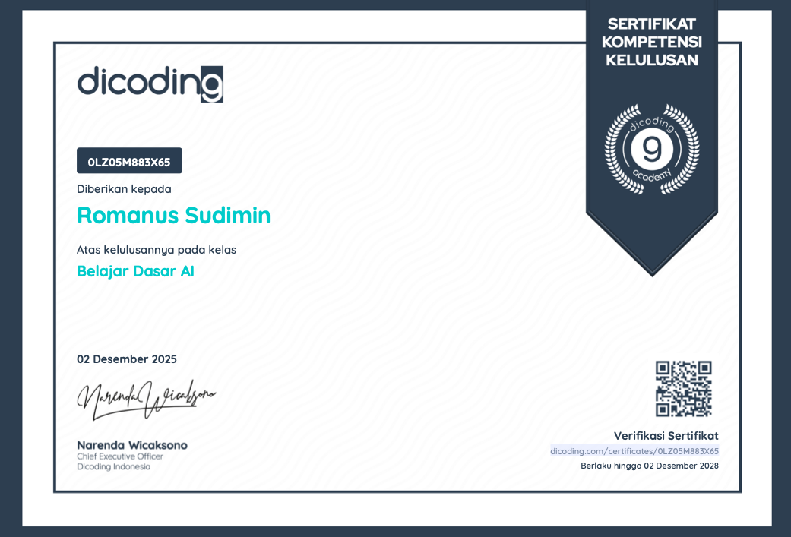
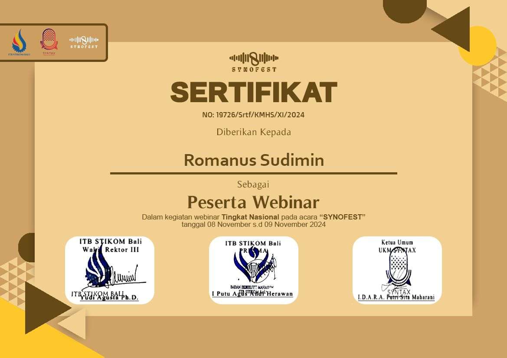
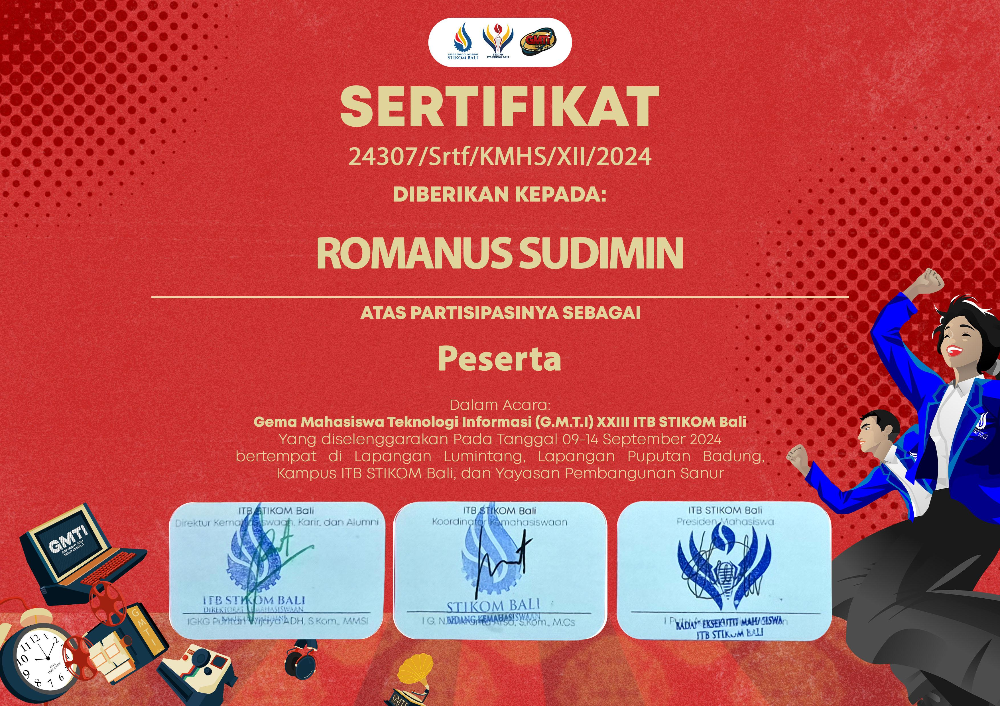
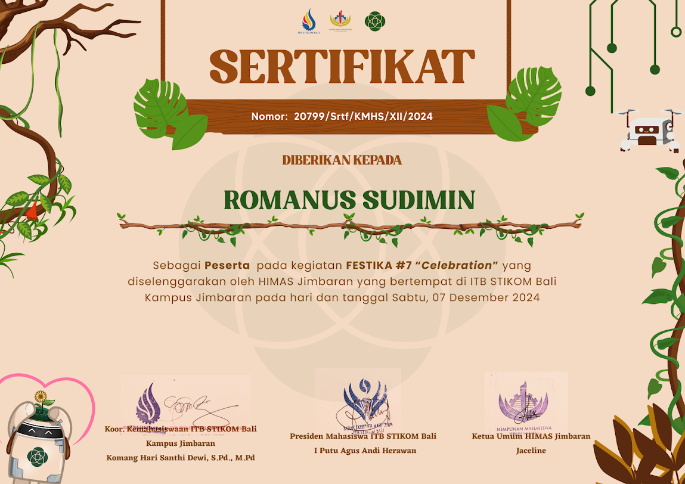
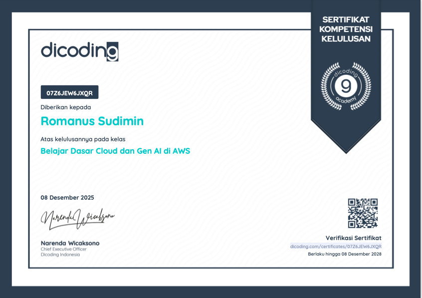

Saya adalah mahasiswa Sistem Informasi di ITB STIKOM Bali, yang memiliki minat pada UI/UX Design, Web Development, dan pengembangan sistem informasi. Saya senang mempelajari teknologi baru, menciptakan solusi digital yang bermanfaat, serta terus mengembangkan keterampilan melalui berbagai proyek dan pengalaman belajar.
Perjalanan saya dalam belajar, bekerja, dan mengembangakan diri.
Menempuh pendidikan di Program Studi Sistem Informasi Institut Teknologi dan Bisnis STIKOM Bali. Aktif mempelajari UI/UX Design, Web Development, Database, Analisis Sistem, dan Pengembangan Aplikasi.
Mendampingi wisatawan selama perjalanan, memberikan informasi mengenai destinasi wisata, serta memastikan pengalaman perjalanan yang nyaman dan menyenangkan.
Memiliki pengalaman di bidang hospitality dengan kemampuan pelayanan pelanggan, komunikasi, kerja sama tim, serta penyelesaian masalah dalam lingkungan kerja yang dinamis.
Kemampuan yang saya miliki dan terus saya kembangakan
Kumpulan tugas dan proyek yang telah saya kerjakan selama perkuliahan.
Perancangan antarmuka pengguna (UI) dan pengalaman pengguna (UX) untuk aplikasi Smart Tourism Labuan Bajo. Proyek mencakup proses wireframe, mockup, prototype, serta evaluasi desain yang berfokus pada kemudahan penggunaan (user-centered design).
Perancangan ide bisnis digital Smart Tourism Labuan Bajo menggunakan pendekatan Business Model Canvas (BMC), Value Proposition, analisis SWOT, serta strategi pemasaran berbasis teknologi.
Proyek perancangan dan analisis Sistem Informasi yang bertujuan mendukung proses bisnis organisasi secara efektif dan efisien. Proyek ini mencakup identifikasi kebutuhan, analisis proses bisnis, perancangan solusi sistem informasi, serta penyusunan laporan sebagai dasar pengambilan keputusan.
Perancangan Sistem Pendukung Keputusan (SPK) untuk membantu pemilihan destinasi wisata terbaik di Labuan Bajo menggunakan metode Simple Additive Weighting (SAW). Proyek ini meliputi analisis kebutuhan, perancangan sistem, perhitungan metode SAW, serta desain antarmuka pengguna.
Berikut merupakan sertifikat pelatihan, kompetensi, dan pengalaman belajar yang telah saya peroleh.










Terima kasih telah mengunjungi portofolio saya. Jangan ragu untuk menghubungi saya melalui media berikut.